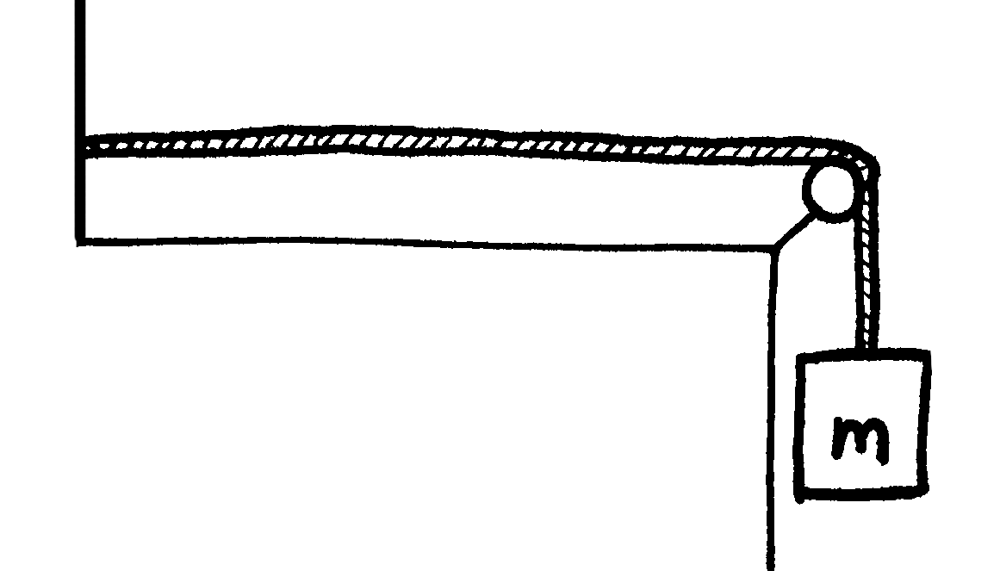
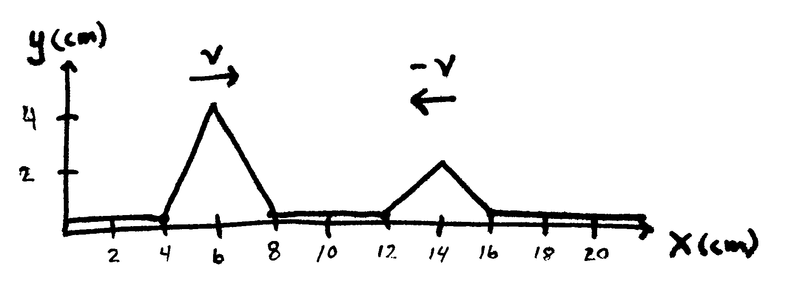

Homework D Waves
Problem D.1
A transverse wave on a string is described by the wave function \[y=0.120 ~\sin \left( \frac{\pi}{8} x+4 \pi t \right)\] where \(x\) and \(y\) are in meters and \(t\) is in seconds. Determine
- the transverse speed
- the transverse acceleration at \(t = 0.200 s\) for an element of the string located at \(x = 1.60 m\).
- the wavelength of the wave
- the period of the wave
- the speed of propagation of the wave
Problem D.2
A transverse sinusoidal wave on a string has a period \(T = 25.0~ms\) and travels in the negative \(x\) direction with a speed of \(30.0 m/s\). At \(t = 0\), an element of the string at \(x = 0\) has a transverse position of \(2.00~cm\) and is traveling downward with a speed of \(2.00~m/s\).
- What is the amplitude of the wave?
- What is the initial phase angle?
- What is the maximum transverse speed of an element of the string?
- Write the wave function for the wave.
Problem D.3
Tension is maintained in a string as in the below figure. The observed wave speed is \(v = 24.0~ m/s\) when the suspended mass is \(m=3.00~kg\).
- What is the mass per unit length of the string?
- What is the wave speed when the suspended mass is \(m = 2.00~kg\)?

Problem D.4
A bat (the winged animal) moving at 5.00 m/s, is chasing a flying insect. If the bat emits a 40.0-kHz chirp and receives back an echo at 40.4 kHz
- What is the speed of the insect?
- Will the bat be able to catch the insect? Explain.
Problem D.5
A student uses an audio oscillator of adjustable frequency to measure the depth of a water well. The student reports hearing two successive resonances at 51.87 Hz and 59.85 Hz.
- How deep is the well?
- How many antinodes are in the standing wave at 51.87 Hz?
Problem D.6
Two wave pulses A and B are moving in opposite directions, each with a speed \(v = 2.00~cm/s\). The amplitude of A is twice the amplitude of B. The pulses are shown below at \(t= 0\). Sketch the resultant wave at the following times: 1.00 s, 1.50 s, 2.00 s, 2.50 s, and 3.00 s.
